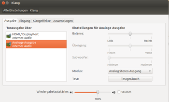
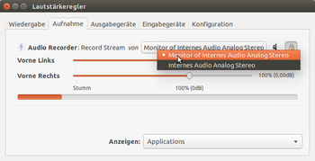
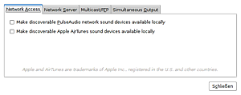
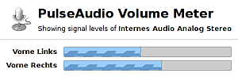

PulseAudio
Dieser Artikel wurde für die folgenden Ubuntu-Versionen getestet:
Ubuntu 16.04 Xenial Xerus
Ubuntu 14.04 Trusty Tahr
Zum Verständnis dieses Artikels sind folgende Seiten hilfreich:
PulseAudio  ist ein erweiterter Soundserver, der von fast allen offiziellen Ubuntu-Varianten verwendet wird. Nur Lubuntu setzt bis einschließlich 16.04 auf ALSA. Erst ab Ubuntu 16.10 gehört es auch dort zur Standardinstallation. PulseAudio kann bei Bedarf jedoch über das Paket pavucontrol nachinstalliert werden.
ist ein erweiterter Soundserver, der von fast allen offiziellen Ubuntu-Varianten verwendet wird. Nur Lubuntu setzt bis einschließlich 16.04 auf ALSA. Erst ab Ubuntu 16.10 gehört es auch dort zur Standardinstallation. PulseAudio kann bei Bedarf jedoch über das Paket pavucontrol nachinstalliert werden.
Die Audioausgaben verschiedener Programme können individuell über eine einfache grafische Oberfläche (GUI) sowohl bezüglich der Lautstärke und der Balance als auch über die Auswahl des Ausgabemoduls (Netzwerk, Soundkarte(n), USB-Kopfhörer) gesteuert werden, ohne dass sich die Kanäle dabei behindern.
Hinweis:
PulseAudio ersetzt ALSA nicht. Zu den Details siehe Soundsystem und ALSA.
Installation¶
PulseAudio ist standardmäßig bereits installiert und findet sich unter "Systemeinstellungen -> Geräte -> Klang" oder im Audio-Indikator des Panels unter "Klangeinstellungen ..." (siehe auch Unity/Unity Desktop).
Unterstützung für GStreamer¶
Zusätzlich sollte man die Unterstützung für das Multimedia-Framework GStreamer nachinstallieren.
gstreamer1.0-pulseaudio
 mit apturl
mit apturl
Paketliste zum Kopieren:
sudo apt-get install gstreamer1.0-pulseaudio
sudo aptitude install gstreamer1.0-pulseaudio
Weitere optionale Pakete¶
Es existieren weitere Module, die das reibungslose Zusammenspiel auf anderen Ebenen sichern [1]:
libsdl1.2debian-pulseaudio (zur Verwendung bei auf SDL-basierenden Spielen)
pulseaudio-module-gconf (um zusätzliche Konfigurationen in GConf zu speichern)
pulseaudio-module-lirc (für die Verwendung von Fernbedienungen mit Lirc)
pulseaudio-module-x11 (ermöglicht PulseAudio, sich für X11 als Standard-Soundserver anzumelden)
pulseaudio-module-zeroconf (zur Verwendung mit Avahi)
mit apturl
Paketliste zum Kopieren:
sudo apt-get install libsdl1.2debian-pulseaudio pulseaudio-module-gconf pulseaudio-module-lirc pulseaudio-module-x11 pulseaudio-module-zeroconf
sudo aptitude install libsdl1.2debian-pulseaudio pulseaudio-module-gconf pulseaudio-module-lirc pulseaudio-module-x11 pulseaudio-module-zeroconf
Zur Audiovisualisierung kann das Programm projectM genutzt werden.
Konfiguration¶
|  |
| PulseAudio |
PulseAudio installiert sich als Dienst, welcher bei jedem Start des Computers automatisch mitgestartet wird. Ob der Soundserver läuft, kann mit dem Befehl ps im Terminal [2] festgestellt werden, der gesuchte Prozess heißt pulseaudio:
ps -C pulseaudio
Wenn alles korrekt ist, sollte die Ausgabe etwa so aussehen:
PID TTY TIME CMD 5747 ? 00:00:02 pulseaudio
Eine spezielle Konfiguration ist in der Regel nicht erforderlich. Nach Änderungen ist PulseAudio neu zu starten [2]:
pulseaudio -k # Beendet PulseAudio pulseaudio -D # Neustart als daemon
Gegebenenfalls erscheint eine Meldung wie
W: ltdl-bind-now.c: Failed to find original dlopen loader.
die allerdings – wenn sie nicht von weiteren Fehlermeldungen begleitet wird – keinen Einfluss auf die Funktion hat.
Surround Sound¶
Analog¶
Um bei einer analogen Surround-Soundkarte alle Kanäle nutzen zu können, muss in der Datei /etc/pulse/daemon.conf das Semikolon (Kommentarzeichen) in der Zeile default-sample-channels entfernt und als Wert die Anzahl der Kanäle eingetragen werden [2][4]. Im Falle einer 5.1-Soundkarte wäre der Wert 6. Nach einem Neustart werden alle Kanäle im PulseAudio Volume Control angezeigt und sind auch regelbar.
Der Wert von enable-lfe-remixing muss auf yes gestellt und das Semikolon in der Zeile entfernt werden, damit der lfe (Subwoofer) richtig arbeitet [2][4]. Ist der Eintrag nicht vorhanden, so muss
enable-lfe-remixing = yes
hinzugefügt werden.
Digital¶
Ubuntu bringt von Haus aus keine Profile für digitalen Surround-Sound über S/PDIF mit. Will man diese verwenden, muss folgende Bibliothek installiert werden:
libasound2-plugins-extra (universe)
mit apturl
Paketliste zum Kopieren:
sudo apt-get install libasound2-plugins-extra
sudo aptitude install libasound2-plugins-extra
Danach lassen sich die Profile für digitalen Surround im Reiter "Konfiguration" im Fenster des Lautstärkereglers auswählen.
Audiostream aufnehmen¶
|  |
| Aufnahme-Spur einrichten |
Mit Programmen wie z.B. Audacity ist es möglich, die Audioausgabe direkt mitzuschneiden und in verschiedenen Formaten abzuspeichern. Dazu muss das Programm Pulse Audio Volume Control (pavucontrol) installiert werden.
Um vom Standard-Ausgabegerät aufzuzeichnen, muss bei laufender Aufnahme in PulseAudio Volume Control im Reiter "Aufnahme" mit  die Spur auf "Monitor of (verwendete Soundkarte)" verschoben werden. Ggf. muss im PulseAudio-Lautstärkeregler im Reiter "Konfiguration" die aktive Soundkarte von "Analog Stereo Duplex" auf "Analog Stereo Ausgang" umgestellt werden.
die Spur auf "Monitor of (verwendete Soundkarte)" verschoben werden. Ggf. muss im PulseAudio-Lautstärkeregler im Reiter "Konfiguration" die aktive Soundkarte von "Analog Stereo Duplex" auf "Analog Stereo Ausgang" umgestellt werden.
Diese Einstellung wird gespeichert, sodass beim nächsten Aufnahmestart gleich der Monitor verwendet wird. Ein Dropdown-Menu ist unten rechts im Aufnahmereiter direkt erreichbar.
Hilfsprogramme¶
Von den Entwicklern empfohlen werden drei Hilfsprogramme.
pavucontrol¶
pavucontrol steht für "PulseAudio Volume Control", ein Programm, welches applikationsbezogene Lautstärkeregler (Mixer) für PulseAudio bereit stellt. Mehr Informationen sind im separaten Artikel pavucontrol zu finden.

paprefs¶
Mit den „PulseAudio Preferences“ kann der Netzwerkzugriff auf den Soundserver erlaubt und konfiguriert werden. Dann können Soundkarten mit PulseAudio über das Netzwerk genutzt werden: nach Aktivieren der Option "Netzwerkzugriff auf lokale Audio-Geräte erlauben" und "Allow other machines on the LAN to discover local sound devices" kann man den Sound eines Programms vom Schreibtisch-PC auf dem Notebook im Schlafzimmer ausgeben. Der Dialog ist auch unter "System -> Einstellungen -.> PulseAudio-Einstellungen" zu finden.
Folgendes Paket muss installiert werden [1]:
paprefs (universe)
mit apturl
Paketliste zum Kopieren:
sudo apt-get install paprefs
sudo aptitude install paprefs
Das Programm ermöglicht es zusätzlich, über den Reiter "Simultane Ausgabe" alle verfügbaren Sound-Karten gleichzeitig anzusteuern.
pulseaudio-dlna dient ebenfalls zur Weiterleitung der Ausgabe ins lokale Netzwerk, benötigt als Ziel allerdings spezielle Hard- oder Software. So kann man beispielsweise die Audio-Ausgabe auf ein Smartphone mit Android umleiten.

Feinheiten¶
Qualität/CPU-Auslastung¶
Die Prozessorauslastung und die Qualität des Klangs (wichtig bei älterer Hardware) hängen von der verwendeten Resampling-Methode ab. Änderungen sind durch das Editieren der Datei /etc/pulse/daemon.conf in einem Editor [4] mit Root-Rechten [3] möglich, verwendbar für resample-method sind [1]:
src-sinc-best-quality, src-sinc-medium-quality, src-sinc-fastest, speex-float-{10-0}, speex-fixed-{10-0}, ffmpeg, src-zero-order-hold, src-linear, trivialIn der Zeile
resample-method =
wird die Resampling-Methode festgelegt. Standardeinstellung ist speex-float-3. Diese kann durch die oben aufgeführten Resampling-Methoden ersetzt werden, um einen sinnvollen Kompromiss zwischen CPU-Auslastung und Klang zu finden.
Soweit PulseAudio die CPU zu sehr beansprucht, hilft es oftmals schon, den Zahlenwert von speex-float herabzusetzen. Ob dies der Fall ist, lässt sich mit der Systemüberwachung unter dem Reiter Ressourcen gut sehen. Sollte es bei einer MP3-Wiedergabe zu Aussetzern kommen und zu diesem Zeitpunkt die CPU-Last im Graphen der CPU-Chronik 100% erreichen, ist die Wahrscheinlichkeit dafür recht hoch. Die Einstellungen für speex-float reichen von 0 (= geringe CPU-Beanspruchung und Sound-Qualität) bis 9 (= hohe CPU-Beanspruchung und Sound-Qualität).
Um stotternden oder verzerrten Skype-Anrufen Abhilfe zu verschaffen, kann eine Änderung auf den Wert speex-float-4 helfen. Außerdem können bei weiterhin bestehenden Klangproblemen oder ganz fehlender Wiedergabe die Werte für die Einträge
default-fragments = 4 default-fragment-size-msec = 25
abgeändert werden, zunächst beispielsweise auf default-fragments = 8 und default-fragment-size-msec = 10. Ggf. müssen die geeigneten Werte für die eigene Soundkarte durch Versuche herausgefunden werden.
Hinweis:
Zeilen mit Semikolon ";" am Anfang werden als Kommentar interpretiert. Deshalb muss es entfernt werden, wenn die Zeile ausgewertet werden soll.
Priorität erhöhen¶
Sollte der Sound beim Umschalten zwischen Anwendungen oder anderen Arbeiten am PC immer mal wieder stocken/knacken, kann man die Priorität des PulseAudio-Dienstes erhöhen.
Hinweis:
Setzt man sie jedoch zu hoch, kann es passieren, dass das System nicht mehr ordentlich heruntergefahren werden kann.
Dazu kann man entweder systemweit die Datei /etc/pulse/daemon.conf mit Root-Rechten[3] editieren oder diese Datei nach ~/.pulse/daemon.conf (Ubuntu 12.04) bzw. ~/.config/pulse/daemon.conf (Ubuntu 14.04) ins Homeverzeichnis kopieren. Dort verändert man folgende Zeilen oder fügt sie ggf. ein [1][4]:
high-priority = yes # default no rlimit-nice = 31 # default 31, Werte größer als 31 werden auf 31 gesetzt nice-level = -11 # default -11, kleinstmöglicher Wert: (20 - rlimit-nice), kleiner heißt mehr CPU-% realtime-scheduling = yes # default no rlimit-rtprio = 9 # default 9, Werte von 1 bis 99 erlaubt realtime-priority = 9 # default 5, höchstmöglicher Wert: rlimit-rtprio, höher heißt mehr Priorität
Zusätzlich muss man für jeden Desktop-Benutzer in der Datei /etc/security/limits.conf folgende zwei Zeilen hinzufügen:
<$USER> - nice -11 # Werte von -20 bis 19 erlaubt <$USER> - rtprio 99 # Werte von 1 bis 99 erlaubt
Anstelle von <$USER> muss der Benutzername eingesetzt werden. Das Editieren dieser Datei erfordert Root-Rechte [3].
Soundausgabe im Netzwerk umleiten¶
Neben der manuellen Zuordnung einzelner Audio-Streams an entfernte Soundserver mittels pavucontrol kann die, die Soundausgabe einzelner Anwendungen, einer Terminal-Sitzung oder des ganzen Systems auf einen Soundserver umgeleitet werden. Hierzu setzt man die Umgebungsvariable PULSE_SERVER auf die IP-Adresse oder den Hostnamen des Soundservers gefolgt von seinem Port. Der Standard-Port des PulseAudio-Soundservers lautet 4713.
Den Sound einer einzelnen Anwendung umleiten (hier: Firefox):
PULSE_SERVER=192.168.0.1:4713 firefox
Den Sound aller danach in einer Terminalsitzung gestarteten Anwendungen umleiten:
export PULSE_SERVER=192.168.0.1:4713
Um den Sound aller danach gestarteten Anwendungen des gesamten Systems umzuleiten, trägt man folgende Zeile in die Datei /etc/environment ein:
PULSE_SERVER=192.168.0.1:4713
Die Änderung wird wirksam, nachdem entweder das System oder nur Pulseaudio mittels des folgenden Befehls neu gestartet wurde:
pulseaudio -k
Hinweis:
Der Soundserver muss auf dem Zielsystem für Zugriffe aus dem Netzwerk freigeschaltet werden, wie es im Abschnitt zu paprefs erläutert ist. Hierzu sind die Optionen "Netzwerkzugriff auf lokale Audio-Geräte erlauben" (engl. "Enable network access to local sound devices") und "Don't require authentication" anzuhaken. "Allow other machines on the LAN to discover local sound devices" wird hingegen bei dieser Methode nicht benötigt.
Problembehebung¶
Skype¶
Ab der Version 4.3 von Skype ist PulseAudio zwingend erforderlich. Bei Problemen mit stotternden Anrufen können die Klangqualität und eventuell die Priorität von PulseAudio wie oben im Abschnitt Qualität/CPU-Auslastung beschrieben verändert werden.
Einstellen des Ausgabemediums¶
Das aktuell voreingestellte "default"-Ausgabemedium kann mit [1]
pactl stat
angezeigt werden.
Eine Liste aller verfügbaren Medien "sinks" erhält man mit [1]
pactl list
Die Nummer des gewünschten Ausgabemediums kann dann in der Datei /etc/pulse/client.conf eingetragen werden:
default-sink =
Anschließend ist ein Neustart erforderlich.
Nutzung mit MPD¶
Kommt es bei der Konfigurierung des Music Player Daemon Server mit PulseAudio zu Problemen, ist es auf einem "Alltagsrechner" ggf. sinnvoller, MPD als Benutzer zu verwenden (siehe MPD auf der Benutzerebene).
Lautstärke bei USB-Soundkarte nicht steuerbar¶
Falls für eine USB-Soundkarte (z.B. CreativLab Soundblaster Roar SR20A) die Lautstärke nicht über den Klangregler steuerbar ist (nur entweder "an" oder "stumm"), hilft es, mit paprefs eine simultane Ausgabe der eingebauten Karte und der USB-Karte zu erstellen und den Ton darüber auszugeben - so lässt sich die Lautstärke über den Schieberegler im Klangmenü einwandfrei steuern.
Debugging¶
Um hartnäckigen Problemen besser auf den Grund gehen zu können, kann der PulseAudio-Daemon mit dem folgenden Befehl beendet und im Debug-Modus neu gestartet werden [1]:
pulseaudio -k; sleep 4; pulseaudio -vv
In der resultierenden Ausgabe lassen sich u.U. die Ursachen für Probleme ablesen.
Erscheint die Meldung "E: pid.c: Daemon already running.", muss in einem Editor[4] mit Root-Rechten [3] in der Datei /etc/pulse/client.conf zunächst der Eintrag
; autospawn = yes
in
autospawn = no
geändert werden, um den automatischen Neustart von PulseAudio nach einem Beenden zu verhindern. Danach kann der Debug-Modus mit der vorhergehenden Befehlszeile korrekt gestartet werden.
Vertauschte Kanäle, Channel Remapping¶
Bei einigen Soundkarten kann es vorkommen, dass die Kanalzuordnung nicht korrekt funktioniert. Zum Beispiel können bei 5.1-Kopfhörern die beiden hinteren Kanäle vertauscht sein. Um die Zuordnung zu ändern, kann die Datei /usr/share/pulseaudio/alsa-mixer/profile-sets/default.conf angepasst werden.
[Mapping analog-surround-51] device-strings = surround51:%f channel-map = front-left,front-right,rear-left,rear-right,front-center,lfe paths-output = analog-output analog-output-speaker analog-output-desktop-speaker priority = 8 direction = output
In der Zeile channel-map = können nun die Einträge entsprechend geordnet werden. Sind die beiden hinteren Kanäle vertauscht, wird aus
channel-map = front-left,front-right,rear-left,rear-right,front-center,lfe
dann
channel-map = front-left,front-right,rear-right,rear-left,front-center,lfe
Nach Speichern der Änderung ist das Soundsystem neu zu starten, z.B. mit:
pactl exit
Die Zuordnung kann mit den entsprechend anderen Kanalzuordnungen (analog-surround-40 usw.) ebenfalls durchgeführt werden.
Multichannel-Chipsätze¶
Bei einigen Chipsätzen (zum Beispiel ICE1712 in den Delta-Karten wie der Audiophile-2496 von M-Audio) sind die Kanäle nicht "richtig" benannt. Durch eine Änderung der Datei /etc/pulse/default.pa kann dies korrigiert werden, siehe diesen Beitrag auf der PulseAudio-Mailingliste oder im Forum. Seit Ubuntu 9.04 bzw. seit PulseAudio 0.9.13 taucht das Problem für die Audiophile-2496 nicht mehr auf. Nach dem gleichen Prinzip lässt sich auch die Terratec EWX2496 konfigurieren (siehe im Forum). Beim nForce2-Chipsatz hilft ggf. diese Anleitung.
Für die Terratec DMX 6 Fire 24/96-Karte gibt es im italienischen Ubuntu-Wiki  eine Anleitung, um sie unter PulseAudio nutzen zu können. Die italienischen Anweisungen sind dennoch gut zu verstehen (siehe dazu auch im Forum). Ein zweiter, hilfreicher Ansatz wird in dem 178443, Kommentar 30 erklärt. Er geht davon aus, dass die ICE1712.conf editiert werden muss, da in der Datei eine falsche Channelzuweisung erfolgt.
eine Anleitung, um sie unter PulseAudio nutzen zu können. Die italienischen Anweisungen sind dennoch gut zu verstehen (siehe dazu auch im Forum). Ein zweiter, hilfreicher Ansatz wird in dem 178443, Kommentar 30 erklärt. Er geht davon aus, dass die ICE1712.conf editiert werden muss, da in der Datei eine falsche Channelzuweisung erfolgt.
PulseAudio und ALSA blockieren sich¶
In dem Falle müssen erst alle ALSA bzw. PulseAudio nutzenden Anwendungen geschlossen werden, um über das jeweils andere wieder Audio ausgeben zu können. Eine provisorische Lösung findet sich im Forum.
Nur "dummy"-Gerät¶
Falls nur ein "dummy"-Gerät für die Ausgabe zur Verfügung steht und damit natürlich die Klangausgabe nicht funktioniert, kann es sein, dass die Soundkarte von einem anderen Prozess belegt ist und nicht von PulseAudio benutzt werden kann. Dies kann z.B. bei einem Softmodem-Treiber (SmartLink) der Fall sein (siehe 449762 ). Welcher Prozess die Soundkarte belegt, kann mit folgendem Befehl überprüft werden [2]:
sudo fuser -v /dev/dsp* /dev/snd/*
In der Ausgabe sollte nur pulseaudio für die Soundkarte vorkommen. Wird das Gerät aber durch den Treiber slmodemd belegt, kann entweder der Modem-Treiber deaktiviert oder eine Problemlösung aus der Launchpad-Diskussion genutzt werden.
Mehrere Benutzer¶
Wenn mehrere Benutzer angemeldet sind und die Tonwiedergabe für den aktiven Benutzer nicht möglich sein sollte, kann dies an einer fehlerhaften Gruppenzuweisung liegen. Dieses Problem kann sich auch durch die Anzeige eines "dummy"-Gerätes äußern. Soll PulseAudio verwendet werden, darf kein Benutzer der Gruppe audio zugewiesen sein. Dies kann leicht mit dem Befehl
grep audio /etc/group
überprüft werden. Es sollte hier nur der Systembenutzer pulse gelistet werden. Sonstige Benutzer müssen aus der Gruppe entfernt werden.
Geräte werden nicht erkannt¶
Sollte die Soundkarte nicht oder nicht mehr erkannt werden, kann man über einen Workaround doch noch zu einer Tonausgabe kommen. Dazu muss die Datei /etc/pulse/default.pa in einem Editor mit Root-Rechten bearbeitet werden [3][4]. Die Zeilen
#load-module module-alsa-sink #load-module module-alsa-source device=hw:1,0
ändern und die Kommentierung (#-Zeichen) entfernen:
load-module module-alsa-sink device=hw:0 load-module module-alsa-source device=hw:0
Die Device-Nr. device=hw:0 ggf. den eigenen Gegebenheiten anpassen; es können auch mehrere Karten (dazu entsprechend neue Zeilen erstellen) eingetragen werden.
PCM übersteuert¶
Wenn die Ausgabelautstärke PCM grundsätzlich zu hoch/übersteuert ist, kann in /usr/share/pulseaudio/alsa-mixer/paths/analog-output.conf.common in einem Editor [4] mit Root-Rechten [3] die Konfigurationsdatei abgeändert werden. In der Sektion PCM setzt man dort das Argument von "volume=merge" auf "volume=ignore" und speichert die Datei. Nach einem Neustart des Rechners (ein Neustart von PulseAudio ist hierbei nicht ausreichend) ist die PCM-Einstellung dann fixiert, kann aber beispielsweise über den Alsamixer geändert werden (siehe 322909 , Kommentare 29 und 30).
Programme, die nicht mit PulseAudio funktionieren¶
Trotzdem gibt es immer noch Programme, z.B. Spiele, die nicht oder nicht gut mit PulseAudio funktionieren. Da PulseAudio ein direkter Ersatz für ESD ist, reicht es aber bei vielen Programmen, diese einfach auf ESD umzustellen. Ggf. können solche Programme auch auf der Kommandozeile mit [1]:
padsp PROGRAMMNAME
gestartet werden. Sie werden dann als OSS-Emulation von PulseAudio verarbeitet. Alternativ kann mit dem Befehl pasuspender PulseAudio für die Nutzung eines bestimmten Programms stillgelegt werden [1]:
pasuspender PROGRAMMNAME
Hinweis:
Seit Ubuntu 10.10 ist das Vorgehen mit padsp PROGRAMMNAME nicht mehr möglich, da /dev/dsp nicht mehr vorhanden ist (siehe 579300 ). Die alsa-oss-Unterstützung im Kernel wurde deaktiviert. Allerdings wird gefordert, dass dieser wieder aktiviert wird, da der Weg mit osspd noch nicht umgesetzt wurde (siehe 716814 ).
Wine¶
Wine unterstützt die Tonausgabe via ALSA. Eine bessere Integration gibt es mit dem inoffiziellen Wine-Treiber für PulseAudio vom wine-multimedia-Projekt . Die entsprechenden Patches sind bereits auf die Pakete im Wine-PPA angewendet worden.
Stotternder Sound bei Netzwerk-Umleitung¶
Kommt es bei der Umleitung des lokalen Sounds auf einen Soundserver per pavucontrol zu Stottern oder Aussetzern, kann die direkte Umleitung helfen, die im Abschnitt Soundausgabe im Netzwerk umleiten beschrieben ist. Typische Kandidaten für dieses Problem sind z.B. im Webbrowser abgespielte YouTube-Videos.
Reset¶
Ein Reset der PulseAudio-Einstellungen im eigenen Homeverzeichnis kann bei einigen Problemen helfen, die anderweitig nicht lösbar sind. Zum Beispiel, wenn eigene Konfigurationen sowie eine Neuinstallation von PulseAudio nicht helfen. Dies gilt insbesondere auch nach Änderungen an der verwendeten Sound-Hardware.
mv ~/.config/pulse ~/.config/pulse-backup
Damit der Reset wirksam wird, muss man PulseAudio neu starten:
pulseaudio -k
Hinweis:
Falls sich PulseAudio aus irgendeinem Grund nach diesem Beenden nicht selbst neu startet, erreicht man dies mit dem Befehl "pulseaudio -D".
Start-Stopp-Skript in deutscher Sprache¶
Dieses Skript kann in der aktuellen Version von PulseAudio getauscht werden, danach stehen einige Texte in deutscher Sprache zur Verfügung. Die Datei /etc/init.d/pulseaudio wird in einem Editor mit Root-Rechten geöffnet, durch folgenden Inhalt ersetzt und abgespeichert.
<limits>
#!/bin/sh -e
### BEGIN INIT INFO
# Provides: pulseaudio esound
# Required-Start: $remote_fs $syslog
# Required-Stop: $remote_fs $syslog
# Should-Start: udev NetworkManager
# Should-Stop: udev NetworkManager
# Default-Start: 2 3 4 5
# Default-Stop: 1
# Short-Description: Startet den PulseAudio-Soundserver
# Description: Systemstartmodus-Script für PulseAudio-Soundserver.
#
# Übersetzt von Paderman für wiki.ubuntuusers.de, getestet auf aktuellem Ubuntu.
#
#
### END INIT INFO
DAEMON=/usr/bin/pulseaudio
PIDDIR=/var/run/pulse
PIDFILE=$PIDDIR/pid
DAEMONUSER=pulse
PATH=/sbin:/bin:/usr/sbin:/usr/bin
test -x $DAEMON || exit 0
. /lib/lsb/init-functions
PULSEAUDIO_SYSTEM_START=0
DISALLOW_MODULE_LOADING=1
test -f /etc/default/pulseaudio && . /etc/default/pulseaudio
if [ "$PULSEAUDIO_SYSTEM_START" != "1" ]; then
log_warning_msg "PulseAudio ist für Sitzungen pro Benutzer konfiguriert"
exit 0
fi
pulseaudio_start () {
log_daemon_msg "Starte PulseAudio-Systemdienst"
if [ ! -d $PIDDIR ]; then
mkdir -p $PIDDIR
chown $DAEMONUSER:$DAEMONUSER $PIDDIR
fi
start-stop-daemon -x $DAEMON -p $PIDFILE --start -- --system --daemonize --high-priority --log-target=syslog --disallow-module-loading=$DISALLOW_MODULE_LOADING
status=$?
if [ -e /var/run/pulse/.esd_auth ]; then
chown pulse:pulse-access /var/run/pulse/.esd_auth
chmod 640 /var/run/pulse/.esd_auth
fi
if [ -e /var/run/pulse/.pulse-cookie ]; then
chown pulse:pulse-access /var/run/pulse/.pulse-cookie
chmod 640 /var/run/pulse/.pulse-cookie
fi
log_end_msg ${status}
}
pulseaudio_stop () {
log_daemon_msg "Stoppe PulseAudio-Systemdienst"
start-stop-daemon -p $PIDFILE --stop --retry 5 || echo -n "...das nicht läuft"
log_end_msg $?
}
case "$1" in
start|stop)
pulseaudio_${1}
;;
restart|reload|force-reload)
if [ -s $PIDFILE ] && kill -0 $(cat $PIDFILE) >/dev/null 2>&1; then
pulseaudio_stop
pulseaudio_start
fi
;;
force-stop)
pulseaudio_stop
killall pulseaudio || true
sleep 2
killall -9 pulseaudio || true
;;
status)
status_of_proc -p $PIDFILE "$DAEMON" "system-wide PulseAudio" && exit 0 || exit $?
;;
*)
echo "Verwendung: /etc/init.d/pulseaudio {start|stop|force-stop|restart|reload|force-reload|status}"
exit 1
;;
esac
exit 0
Hinweis:
Der Inhalt sollte unverändert bleiben. Nur so kann sichergestellt werden, dass das Skript ordnungsgemäß funktioniert.
Links¶
Documentation
- Handbücher für Anwender und Entwickler
System-wide PulseAudio Equalizer
- Blog-Artikel, 03/2013Sounds mit PulseAudio umleiten
 - Blog-Artikel, 02/2009
- Blog-Artikel, 02/2009Audio Recorder stream2ip - Netzwerk-Geräte als Audio-Ausgabegeräte im LAN/WLAN einrichten
Log PulseAudio - wie man PulseAudio-Logs erstellen lassen kann
- Erstellt mit Inyoka
-
 2004 – 2017 ubuntuusers.de • Einige Rechte vorbehalten
2004 – 2017 ubuntuusers.de • Einige Rechte vorbehalten
Lizenz • Kontakt • Datenschutz • Impressum • Serverstatus -
Serverhousing gespendet von